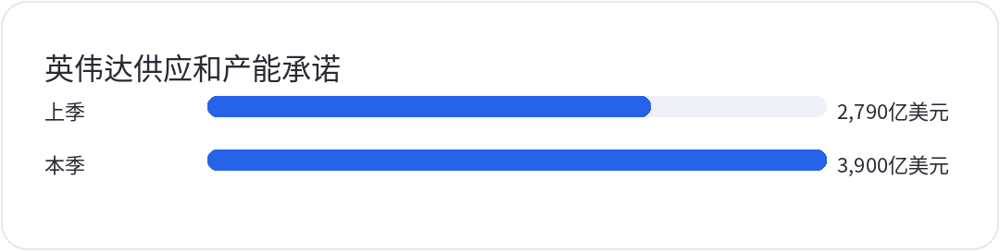
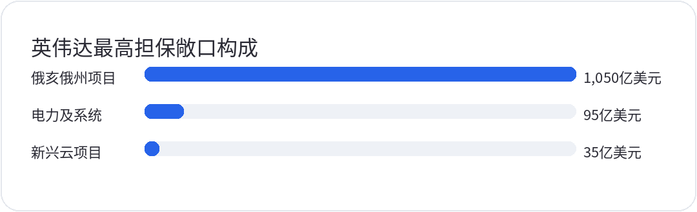

<div style="margin:0;padding:0;background:#f5f7fa;color:#2a2a34;font-size:16px;line-height:1.9;font-family:-apple-system,BlinkMacSystemFont,'SF Pro Text','PingFang SC','Hiragino Sans GB','Microsoft YaHei',Arial,sans-serif;font-variant-numeric:tabular-nums;font-feature-settings:'tnum' 1,'lnum' 1;text-align:left !important;text-align-last:left;letter-spacing:0;word-spacing:normal;white-space:normal;word-break:normal;box-sizing:border-box;"><div style="margin:0;background:#ffffff;padding:28px 22px 44px 22px;box-sizing:border-box;text-align:left !important;text-align-last:left;letter-spacing:0;word-spacing:normal;white-space:normal;word-break:normal;"><p style="display:block;width:100%;margin:0 0 12px 0;padding:0;color:#2763e9;font-size:10px;line-height:1.6;font-weight:650;letter-spacing:0.12em;text-align:center !important;text-align-last:center;word-spacing:normal;white-space:normal;word-break:normal;box-sizing:border-box;">美股 · 期权 · 资讯 · 观点</p><div style="margin:0 0 0 0;padding:28px 0 0 0;text-align:left !important;text-align-last:left;letter-spacing:0;word-spacing:normal;white-space:normal;word-break:normal;box-sizing:border-box;"><div style="margin:0 0 12px 0;padding:0;text-align:left !important;line-height:1.2;border:0;display:flex;align-items:center;gap:10px;text-align-last:left;letter-spacing:0;word-spacing:normal;white-space:normal;word-break:normal;box-sizing:border-box;"><span style="display:inline-block;flex:0 0 auto;vertical-align:middle;color:#2763e9;font-size:12px;font-weight:850;letter-spacing:0.12em;line-height:1.2;text-transform:uppercase;border:0;box-sizing:border-box;">0 · SEMIS</span><span style="display:block;flex:1 1 auto;min-width:36px;vertical-align:middle;height:1px;margin:0 0 2px 0;background:#2763e9;line-height:1px;font-size:0;border:0;box-sizing:border-box;"></span></div><p style="margin:0 0 16px 0;padding:0;color:#2a2a34;font-size:22px;line-height:1.45;font-weight:850;text-align:left !important;letter-spacing:0;text-align-last:left;word-spacing:normal;white-space:normal;word-break:normal;box-sizing:border-box;">芯片股从低位翻红，大盘仍在防守</p><p style="margin:0 0 16px 0;padding:0;color:#454550;font-size:16px;line-height:1.9;font-weight:400;text-align:left !important;letter-spacing:0;word-spacing:normal;white-space:normal;word-break:normal;text-align-last:left;box-sizing:border-box;">11月17日，标普500指数跌1.03%，收在7340.53点，略低于按过去200个交易日收盘价算出的7344.53点。跟踪标普的 <strong style="color:#2a2a34;font-weight:700;box-sizing:border-box;">SPY</strong> 盘中最低727美元，收在732.44美元，略高于前复权200日均线约729.80美元。标普指数和ETF各用自己的价格序列，728美元则是后续观察价位。<strong style="color:#2a2a34;font-weight:700;box-sizing:border-box;">QQQ</strong> 收656.95美元，跌0.73%。<strong style="color:#2a2a34;font-weight:700;box-sizing:border-box;">SOXX</strong> 最深跌3.58%，收涨0.17%至141.46美元。VIX却升约11%至25.46，芯片收复了日内失地，指数和波动率还没给出同样的信号。</p><p style="margin:0 0 16px 0;padding:0;color:#454550;font-size:16px;line-height:1.9;font-weight:400;text-align:left !important;letter-spacing:0;word-spacing:normal;white-space:normal;word-break:normal;text-align-last:left;box-sizing:border-box;">美国10月名义零售销售环比增0.2%，符合路透社调查预期，低于9月的0.8%。剔除汽车、汽油、建材和餐饮的零售控制组增长0.6%，高于调查预期的0.4%。总额增速放慢，控制组却好于预期，消费比单看总额更有韧性。</p></div><div style="margin:30px 0 0 0;padding:28px 0 0 0;text-align:left !important;text-align-last:left;letter-spacing:0;word-spacing:normal;white-space:normal;word-break:normal;box-sizing:border-box;"><div style="margin:0 0 12px 0;padding:0;text-align:left !important;line-height:1.2;border:0;display:flex;align-items:center;gap:10px;text-align-last:left;letter-spacing:0;word-spacing:normal;white-space:normal;word-break:normal;box-sizing:border-box;"><span style="display:inline-block;flex:0 0 auto;vertical-align:middle;color:#2763e9;font-size:12px;font-weight:850;letter-spacing:0.12em;line-height:1.2;text-transform:uppercase;border:0;box-sizing:border-box;">1 · FOCUS</span><span style="display:block;flex:1 1 auto;min-width:36px;vertical-align:middle;height:1px;margin:0 0 2px 0;background:#2763e9;line-height:1px;font-size:0;border:0;box-sizing:border-box;"></span></div><p style="margin:0 0 16px 0;padding:0;color:#2a2a34;font-size:22px;line-height:1.45;font-weight:850;text-align:left !important;letter-spacing:0;text-align-last:left;word-spacing:normal;white-space:normal;word-break:normal;box-sizing:border-box;">采购先锁产能，担保分阶段生效</p><p style="margin:0 0 16px 0;padding:0;color:#454550;font-size:16px;line-height:1.9;font-weight:400;text-align:left !important;letter-spacing:0;word-spacing:normal;white-space:normal;word-break:normal;text-align-last:left;box-sizing:border-box;">英伟达（<strong style="color:#2a2a34;font-weight:700;box-sizing:border-box;">NVDA</strong>）11月17日公布2027财年第三季度业绩。营收1158.44亿美元，环比增20%，同比增103%，高于路透社援引的LSEG市场预期1091.1亿美元。数据中心收入1076亿美元，调整后每股收益2.68美元，调整后毛利率74.9%。自由现金流437.77亿美元，税款支付时点也影响了环比变化。第四季度收入指引中值1300亿美元，上下浮动3%，高于1252.5亿美元的市场预期。第四季度有14周，且指引未计入中国市场的数据中心计算收入，调整后毛利率预期为71%至72%。管理层也在电话会上将2028财年营收增速展望从约70%提高到约75%。9月新增1500亿美元回购授权，季度末尚有2273亿美元授权可用。</p><p style="margin:0 0 16px 0;padding:0;color:#454550;font-size:16px;line-height:1.9;font-weight:400;text-align:left !important;letter-spacing:0;word-spacing:normal;white-space:normal;word-break:normal;text-align-last:left;box-sizing:border-box;">供应和产能承诺从2790亿美元升到3900亿美元，增幅约40%，主要由多年期内存采购推动。上游拿到了排产依据。英伟达则要承担更高的多年采购承诺，让未来出货有内存可用。按公司列出的期限，3640亿美元约占93%，落在2029财年及以前，之后仍有260亿美元承诺。财报没有拆出单一供应商的份额。</p><p style="margin:4px 0 6px 0;padding:0;text-align:center !important;text-align-last:center;word-spacing:normal;white-space:normal;word-break:normal;box-sizing:border-box;"></p><p style="margin:0 0 16px 0;padding:0;color:#6b7280;font-size:12px;line-height:1.6;text-align:center !important;text-align-last:center;word-spacing:normal;white-space:normal;word-break:normal;box-sizing:border-box;">公司财务主管说明所列承诺额，主要增加项为多年期内存采购。</p><p style="margin:0 0 16px 0;padding:0;color:#454550;font-size:16px;line-height:1.9;font-weight:400;text-align:left !important;letter-spacing:0;word-spacing:normal;white-space:normal;word-break:normal;text-align-last:left;box-sizing:border-box;">英伟达另披露320亿美元的新兴云合作采购协议。合作伙伴要先取得融资，部署能运行的算力并通过英伟达验收，否则相关承诺可能减少或取消。另一个口径是最高1180亿美元的担保敞口，其中俄亥俄州项目1050亿美元，电力及系统95亿美元，新兴云项目的土地、电力和机房外壳35亿美元。俄亥俄州部分早在8月披露。上一季披露的1085亿美元最高担保敞口已经包含俄亥俄州项目，截至本季披露尚未因上述担保付款。俄亥俄州担保在建筑达到就绪条件后分阶段生效，首批预计在2029财年。对新兴云企业来说，能满足融资和验收条件，才有机会把协议变成交付和收入。</p><p style="margin:4px 0 6px 0;padding:0;text-align:center !important;text-align-last:center;word-spacing:normal;white-space:normal;word-break:normal;box-sizing:border-box;"></p><p style="margin:0 0 16px 0;padding:0;color:#6b7280;font-size:12px;line-height:1.6;text-align:center !important;text-align-last:center;word-spacing:normal;white-space:normal;word-break:normal;box-sizing:border-box;">合计1180亿美元，为最高担保敞口。截至披露尚未付款，个别担保按条件生效。</p></div><div style="margin:30px 0 0 0;padding:28px 0 0 0;text-align:left !important;text-align-last:left;letter-spacing:0;word-spacing:normal;white-space:normal;word-break:normal;box-sizing:border-box;"><div style="margin:0 0 12px 0;padding:0;text-align:left !important;line-height:1.2;border:0;display:flex;align-items:center;gap:10px;text-align-last:left;letter-spacing:0;word-spacing:normal;white-space:normal;word-break:normal;box-sizing:border-box;"><span style="display:inline-block;flex:0 0 auto;vertical-align:middle;color:#2763e9;font-size:12px;font-weight:850;letter-spacing:0.12em;line-height:1.2;text-transform:uppercase;border:0;box-sizing:border-box;">2 · SETUP</span><span style="display:block;flex:1 1 auto;min-width:36px;vertical-align:middle;height:1px;margin:0 0 2px 0;background:#2763e9;line-height:1px;font-size:0;border:0;box-sizing:border-box;"></span></div><p style="margin:0 0 16px 0;padding:0;color:#2a2a34;font-size:22px;line-height:1.45;font-weight:850;text-align:left !important;letter-spacing:0;text-align-last:left;word-spacing:normal;white-space:normal;word-break:normal;box-sizing:border-box;">董事会物色继任者，浑水披露空头仓位</p><p style="margin:0 0 16px 0;padding:0;color:#454550;font-size:16px;line-height:1.9;font-weight:400;text-align:left !important;letter-spacing:0;word-spacing:normal;white-space:normal;word-break:normal;text-align-last:left;box-sizing:border-box;">董事会主席哈维·琼斯表示，目前没有让黄仁勋重新担任CEO的计划。临时CEO科莱特·克雷斯继续兼任财务主管，公司将同时考察内部和外部候选人。董事会还成立了国家安全和出口管制监督委员会。对股东而言，值得盯的是接班后具体怎么执行出口合规，以及对新客户融资的审查会不会收紧。</p><p style="margin:0 0 16px 0;padding:0;color:#454550;font-size:16px;line-height:1.9;font-weight:400;text-align:left !important;letter-spacing:0;word-spacing:normal;white-space:normal;word-break:normal;text-align-last:left;box-sizing:border-box;">11月17日英伟达财报发布前，浑水研究在报告中披露，发布时已持有英伟达证券或相关衍生品的空头仓位。报告对中国相关的芯片流向和出口合规提出疑问。浑水称出于风控，计划从发布报告时开始回补大部分空头，也可能全部回补。报告未披露建仓时间或仓位规模，实际回补情况仍待确认。</p><p style="margin:0 0 16px 0;padding:0;color:#454550;font-size:16px;line-height:1.9;font-weight:400;text-align:left !important;letter-spacing:0;word-spacing:normal;white-space:normal;word-break:normal;text-align-last:left;box-sizing:border-box;">财报显示当季需求和利润率强劲，市场还要判断下一任管理层将如何选择支持的客户、约束融资风险。</p></div><div style="margin:30px 0 0 0;padding:28px 0 0 0;text-align:left !important;text-align-last:left;letter-spacing:0;word-spacing:normal;white-space:normal;word-break:normal;box-sizing:border-box;"><div style="margin:0 0 12px 0;padding:0;text-align:left !important;line-height:1.2;border:0;display:flex;align-items:center;gap:10px;text-align-last:left;letter-spacing:0;word-spacing:normal;white-space:normal;word-break:normal;box-sizing:border-box;"><span style="display:inline-block;flex:0 0 auto;vertical-align:middle;color:#2763e9;font-size:12px;font-weight:850;letter-spacing:0.12em;line-height:1.2;text-transform:uppercase;border:0;box-sizing:border-box;">3 · FOCUS</span><span style="display:block;flex:1 1 auto;min-width:36px;vertical-align:middle;height:1px;margin:0 0 2px 0;background:#2763e9;line-height:1px;font-size:0;border:0;box-sizing:border-box;"></span></div><p style="margin:0 0 16px 0;padding:0;color:#2a2a34;font-size:22px;line-height:1.45;font-weight:850;text-align:left !important;letter-spacing:0;text-align-last:left;word-spacing:normal;white-space:normal;word-break:normal;box-sizing:border-box;">观察728美元附近的买盘能否延续</p><p style="margin:0 0 16px 0;padding:0;color:#454550;font-size:16px;line-height:1.9;font-weight:400;text-align:left !important;letter-spacing:0;word-spacing:normal;white-space:normal;word-break:normal;text-align-last:left;box-sizing:border-box;">美银11月基金经理调查显示，科技股净超配从37%降到12%，降幅为2006年6月以来最大，调查对象整体仍为净超配。高盛主经纪业务客户的科技股多空头寸比降至1.50，为该序列自2016年开始以来最低。两个样本都指向风险偏好降温，但不足以推断整个市场的绝对空头规模。</p><p style="margin:0 0 16px 0;padding:0;color:#454550;font-size:16px;line-height:1.9;font-weight:400;text-align:left !important;letter-spacing:0;word-spacing:normal;white-space:normal;word-break:normal;text-align-last:left;box-sizing:border-box;"><strong style="color:#2a2a34;font-weight:700;box-sizing:border-box;">SPY</strong> 若再次跌破728美元，并跌穿11月17日的727美元低点后收不回来，反弹的可信度会降低。标普500若能收复7550点，并看到更多板块参与，空头回补可能加快上涨。如果反弹只靠几只芯片股，空头回补过后还得看大盘自身能否接住。Anthropic预计11月19日开始交易，仍以发行完成为前提。风险偏好能否修复，可以同时看IPO承接力和大盘反弹的持续性。</p></div><p style="margin:28px 0 0 0;padding:22px 0 0 0;color:#9a9aa8;font-size:12px;line-height:1.8;text-align:center !important;text-align-last:center;word-spacing:normal;white-space:normal;word-break:normal;box-sizing:border-box;">免责声明：本文仅为个人市场观察和交易复盘，不构成任何投资建议；市场有风险，交易需谨慎。</p></div></div>
